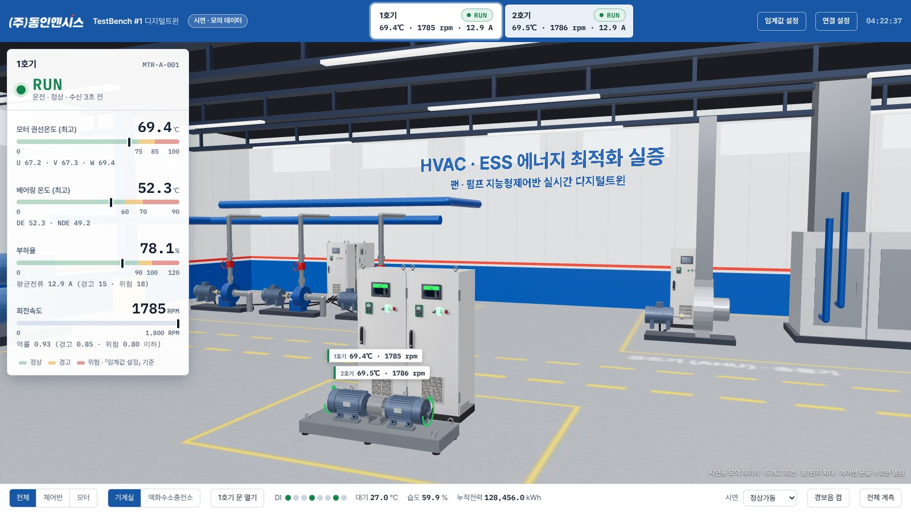
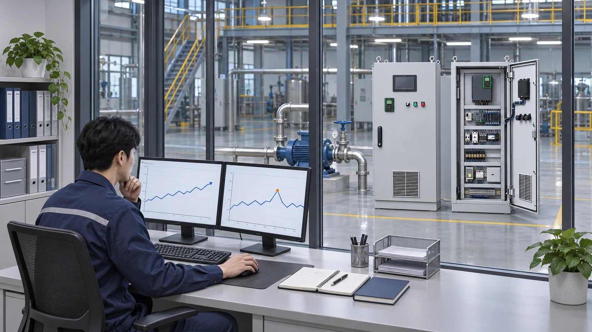
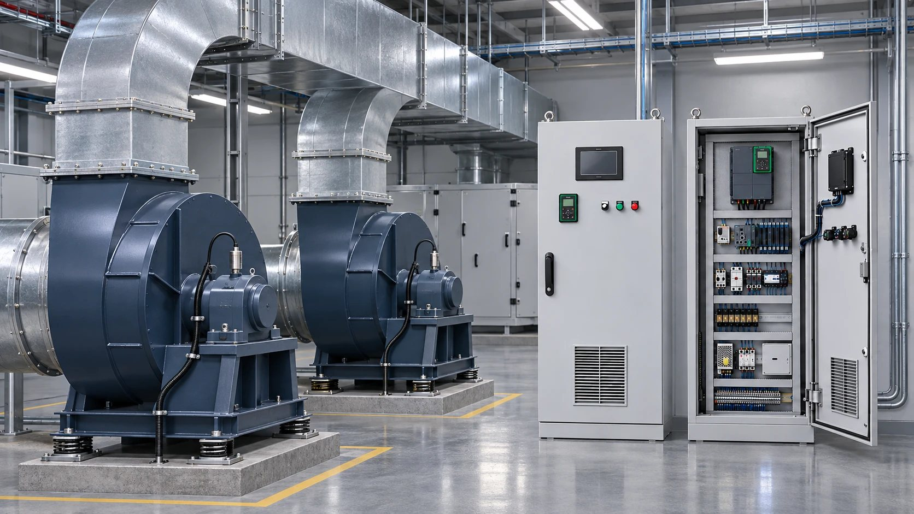

AI가 판단하고, PLC가 움직입니다. 둘을 잇는 회사.
(주)동인엔시스는 설비를 제어하는 지능형 제어반에서 모터 온도·전류·진동 데이터를 24시간 수집합니다. 기준값 알람과 디지털트윈 대시보드는 지금 쓸 수 있고, 정상 운전 패턴을 학습하는 산업용 AI 이상 탐지와 엣지 AI, 에너지 절감 제어는 현재 실증(PoC) 중입니다.

AI 예지보전은 좋은 데이터에서 시작합니다. 지능형 제어반이 위 항목을 24시간 기록하고, 실증에서는 고정밀 데이터 수집 장치(DAQ)로 kHz 단위 전기 파형까지 수집해 분석합니다.

지능형 제어반으로 운전 데이터 24시간 기록
기준을 벗어나면 대시보드로 경고·알람
비지도 학습으로 정상 패턴과 다른 이상 찾기
학습한 결과를 현장 컨트롤러로 보내 즉시 판단
최적 운전값을 PLC로 되돌려 전력 5% 이상 절감 목표

| 날짜 | 매체 | 내용 |
|---|---|---|
| 2026.04.17 | IT비즈뉴스 | 「산업용 AI」로 제조 AX 시대 연다… 에너지 5% 절감 솔루션 실증 착수 |
| 2026.04.13 | 데일리경제 | 「비지도 학습 엣지 AI」로 현장 밀착형 자율 제어 시대 주도 |
보도자료 전문은 아래 링크와 보도자료 목록에서 볼 수 있습니다. 실증 결과는 확인되는 대로 공개합니다.
센서·PLC·인버터가 들어가는 제어반을 직접 설계·제작하므로, AI에 필요한 데이터를 처음부터 제대로 모읍니다. 750건 이상은 제어시스템 프로젝트 수이며 AI 학습 데이터 건수가 아닙니다.
AI는 알려 주기만 해서는 설비가 바뀌지 않습니다. 제어반과 PLC 프로그램을 직접 만드는 회사라서, AI가 찾은 운전값을 PLC로 되돌려 설비 운전에 반영하는 제어까지 잇습니다(실증 중). 인터록과 최종 제어는 현장 PLC가 맡고, 서버가 설비를 직접 제어하지 않습니다.
자사 특허 「모듈러 인출식 VFD 판넬」과 AI 예지보전을 결합해, 고장 징후가 잡히면 설비 전체를 멈추지 않고 해당 모듈만 교체하는 방식을 실증하고 있습니다.
설비 데이터 수집과 기준값 알람, 대시보드는 도입 직후부터 사용할 수 있습니다. 정상 운전 데이터를 학습하는 AI 이상 탐지는 현재 실증(PoC) 단계에서 고도화하고 있으며, 상용화가 끝난 기능으로 소개하지 않습니다. 실증에 관심 있는 현장은 문의해 주시면 함께 검토합니다.
실증 중인 AI는 비지도 학습 방식이라 고장 데이터를 사람이 일일이 분류할 필요 없이 정상 운전 패턴을 스스로 학습해 이상을 찾습니다. 그래서 데이터가 적은 신규 현장이나 특수 설비에도 적용할 수 있도록 실증하고 있습니다.
무거운 AI 학습은 클라우드에서 하고, 학습해 얻은 파라미터만 현장 엣지 컨트롤러로 보내는 구조입니다. 네트워크가 끊겨도 현장에서 바로 판단할 수 있습니다. 엣지 장치로 ABB AC500, 피닉스컨택트 AXC F 2152 등을 검토하고 있습니다.
AI가 찾은 최적 운전값을 현장 PLC로 되돌려 보내는 폐루프 제어로 산업용 모터 시스템의 전력 소비를 5% 이상 줄이는 것을 목표로 실증하고 있습니다. 확정된 절감률이 아니며, 실증으로 검증한 결과를 공개할 예정입니다.
모터 권선온도(U·V·W), 베어링 온도, 회전속도, 전압·전류·전력량, 진동, 대기 온습도, 운전 상태신호를 24시간 기록합니다. 실증에서는 고정밀 데이터 수집 장치(DAQ)로 kHz 단위 전기 파형도 수집합니다.
AI가 이상이나 더 나은 운전값을 찾아도, 설비가 실제로 바뀌려면 PLC 프로그램이 그 값을 받아 제어해야 합니다. 동인엔시스는 제어반과 PLC 프로그램을 직접 만드는 회사라서 데이터 수집부터 PLC 제어 연동까지 한 회사에서 잇습니다. AI 운전값을 PLC로 되돌리는 제어는 현재 실증 중입니다.
설비의 인터록과 최종 제어 권한은 현장 PLC가 가지며, 서버가 설비를 직접 제어하지 않습니다. 현장과 클라우드·고객사 서버 사이 통신은 TLS로 암호화합니다.
홈페이지의 디지털트윈 시연 화면에서 지능형 제어반 TestBench(제어반 2면·모터 2대)를 3D로 볼 수 있습니다. 모터 온도·회전속도·전류를 정상·경고·위험으로 판정해 보여 주며, 시연용 모의 데이터로 동작합니다.
네. 동인엔시스가 현장 설비 연동(OT) 구간을 맡고, 표준 데이터 구조와 REST API로 운전 데이터를 제공합니다. AI 분석 기업과의 협업으로도 적용할 수 있습니다.
대상 설비와 지금 관리하는 방식을 남겨 주시면 담당 엔지니어가 데이터 수집부터 적용 방안을 검토해 연락드립니다.